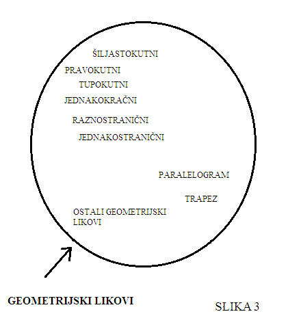
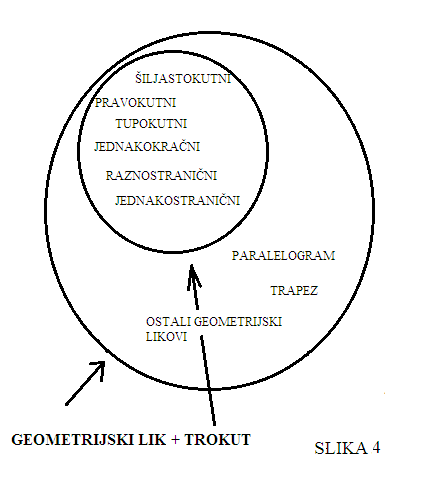

Sadržaj i opseg pojma
Sadržaj pojma jest ukupnost obilježja koja čine pojam. *
Opseg pojma jest ukupnost svih predmeta na koje se pojam odnosi. *
Te su dvije definicije prilično sažete pa ću ih u nastavku pokušati što bolje pojasniti. Pogledajte stoga sljedeću sliku:

Iz slike se može vidjeti kako pojam "geometrijski lik" sadrži sva obilježja svih njemu podređenih pojmova. U opseg pojma "geometrijski lik" spadaju svi predmeti koji jesu geometrijski likovi, tako da kad netko kaže "geometrijski lik", onda znamo da pod tim misli na sve predmete koje taj pojam obuhvaća, a to su svi predmeti koji imaju najmanje tri kuta i stranice, a nisu trodimenzionalni.
Pogledajmo što će se dogoditi ako pojam "geometrijski lik" proširimo pojmom "trokut", odnosno ako mu povećamo sadržaj:

Primjećujemo kako se opseg pojma "geometrijski lik" najednom smanjio i postao ponešto precizniji ili bolje rečeno, determiniraniji. To se dogodilo zato jer smo iz njega izbacili sve druge geometrijske likove. Ovo nam također govori nešto i o odnosu opsega i sadržaja pojma, a to je da oni stoje u obrnuto proporcionalnom odnosu. Također vrijedi i obrnuto; što više sadržaja iz pojma izbacimo, to će pojam imati veći opseg, odnosno biti će apstraktniji.
Pojmu možemo dodavati razna obilježja (proširivati mu sadržaj), sve dok ne dođemo do nekog točno određenog pojedinačnog predmeta, kao što je primjerice pas Floki iz Trnskog čiji je vlasnik Marko Marković, ili mu možemo oduzimati ta ista obilježja (proširivati mu opseg) sve dok ne dođemo do općenitijeg pojma kao što je primjerice biće.